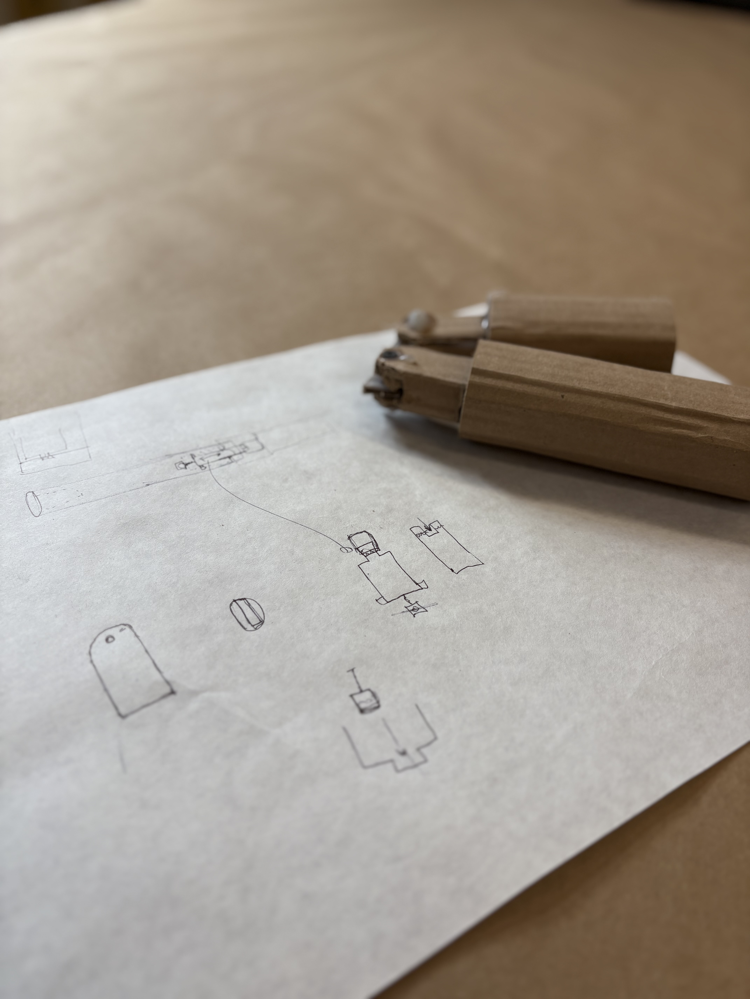
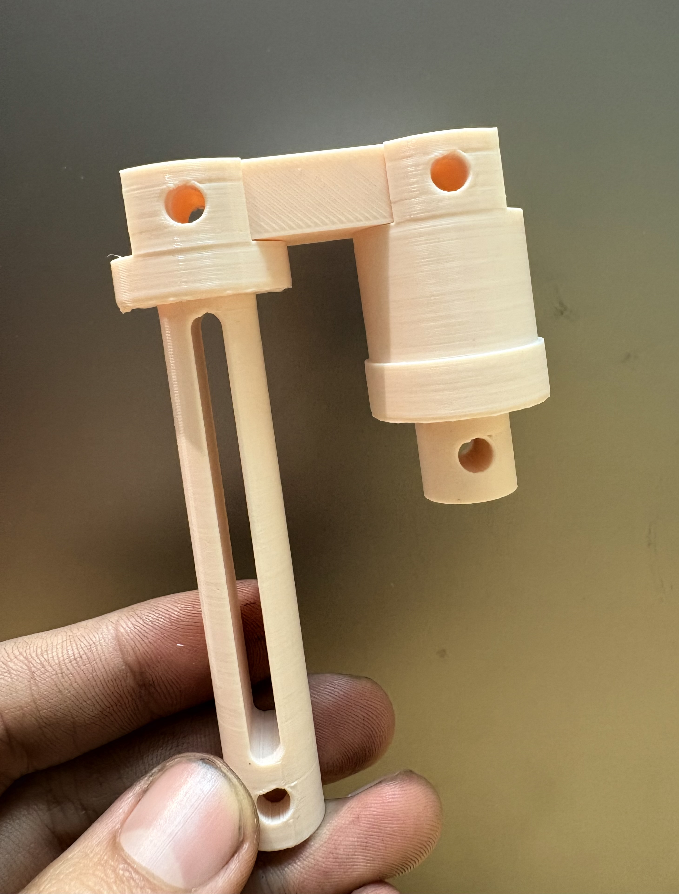
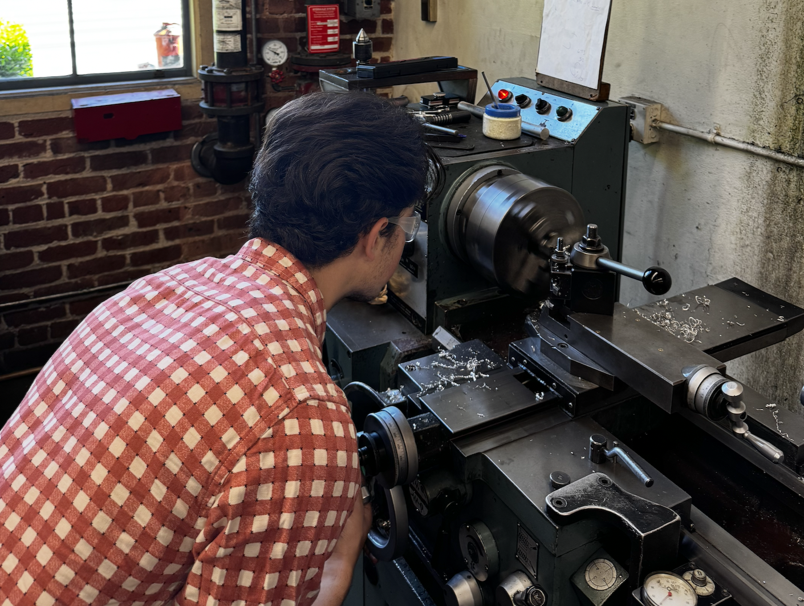
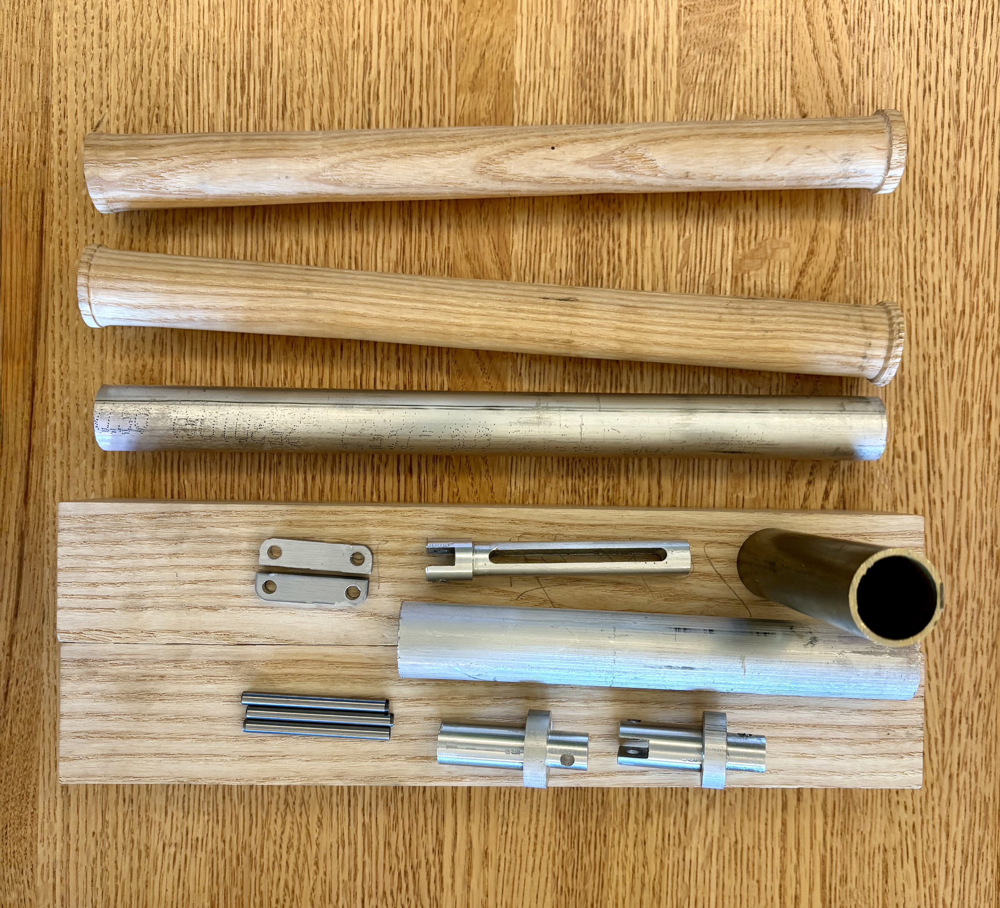
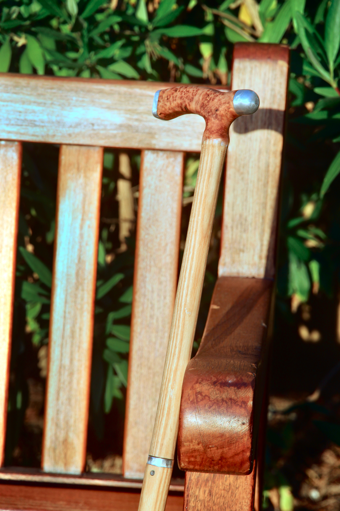

Bastón
a foldable cane for my abuela

Bastón is Spanish for cane — this project was as personal as it was technical, co-designed by and for my grandmother.
A foldable cane, designed and built by hand. The build combined old and new techniques: a hand-turned wooden shaft on the lathe, a machined metal folding mechanism (designed by me) milled and drilled (by me), and water-jet-cut links.
A 5.8" hole was drilled straight down the center of the hand-turned rod to house the internal folding mechanism — invisible when assembled, essential to how it works. Every joint was tested individually before final assembly: milling the slot, drilling the center bore, lathing both the long and short shaft sections, and shaping the outer wooden shell.
Bastón's Journey
From Sketch to Finished Cane




